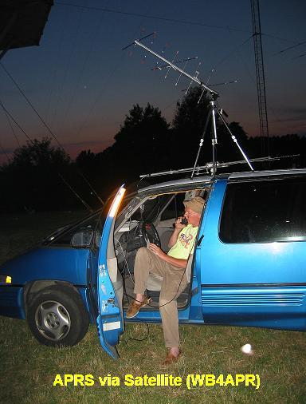
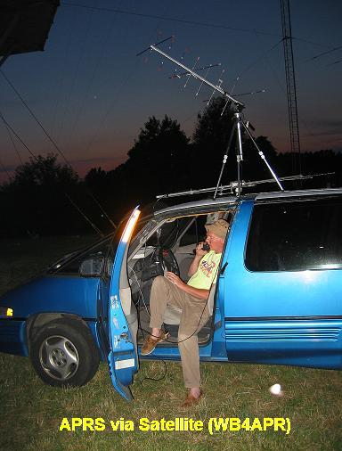
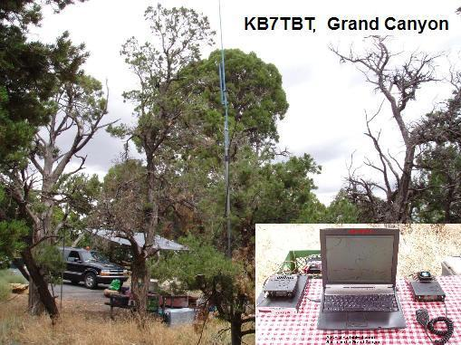

Bob Bruninga, WB4APR
OVERVIEW: The Automatic Packet Reporting System is ideal for getting in contact with others and making friends on the road during holiday travels to the National Parks and other populated but remote areas. This page evolved from my initial frustrations many years ago when visiting the Grand Canyon and not hearing anything on the National APRS frequency of 144.39 in the park, nor getting any local info beacons to tell me about voice repeaters or anything else about Ham radio in the area.
 With 4.5 million visitors a year, and .5% of them being hams, there can be as many as several dozen hams in the park on any given day, but how to locate them or inform them of Ham resources in the area? . From that, I realized we needed to concentrate as an APRS community on supporting Ham radio connectivity and APRS communications in the parks, even though most of us do not live anywhere near them. . If you visit a park and hear no APRS activity and get no info beacons, get on the air on the local repeater and ask them why not. . OR post an email on the aprssig@tapr.org email reflector and let us know so we can update the file below.
Click here for a list of the status of APRS in the parks.
STAYING CONNECTED... LOCAL INFO BEACONS:
DIGI Info: To help ham travelers, since 2004 all digis should include not only their own ID beacons, but information beacons about other Ham Voice resources in the area to include NET times and montly meeting dates, etc.
Traveler Repeater Frequencies: . This secondary APRS digipeater mission keeps all users in its footprint informed about local repeaters in the area by frequency and tone so that travelers can instantly make contact with the push of a button on their APRS radio front panel. These beacons are once every 10 minutes direct (the standard APRS refresh rate for local info). By originating at the digi, they add zero load to the network, since they will only be transmitted when the high-site digi hears a clear channel. Please see the Localinfo web page.
APRS on the Interstate: Also do not forget that one in every 500 people you pass is another HAM radio operator. On a busy interstate, you will pass another ham about once every 10 minutes. Unless you are calling CQ every 3 minutes or so you will pass in silence. But not with APRS and Voice Alert! The best way to never miss an eyeball opportunity is to run APRS Voice Alert. With Voice Alert, you are always in voice contact with all surrounding APRS operators that are in simplex range, AND you are automatically "calling CQ" every minute!
Voice Contact Frequencies: Since 2004 APRS includes the new dimension of Voice Frequency to all APRS mobile operator packets as well. The Kenwood and Yaesu APRS radios not only include your voice frequency, and tone in each of your position packets, but also have a TUNE or QSY button to instantly switch to the voice frequency of another operator or repeater when seen. With everyone now able to include their voice operating frequency in their packets, it is much easier to find other operators and repeaters. This is now FUNDAMENTAL APRS.
Bob, WB4APR